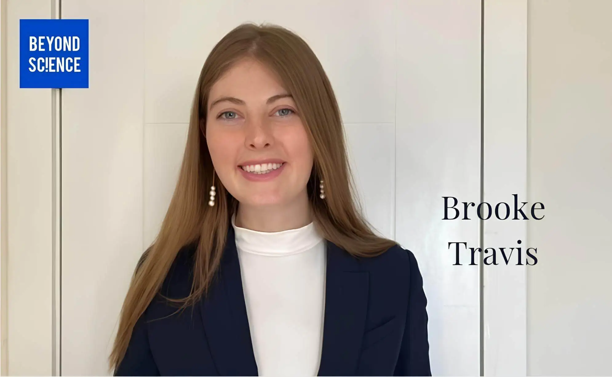

Brooke Travis, the Deep Sea Biologist Exploring the Ocean's Secrets

Meet Brooke Travis, the Deep Sea Biologist Exploring the Ocean's Secrets
Brooke Travis is a PhD candidate in marine biology at Harvard, and her work is taking her to new depths - literally. She's studying the unique relationships between deep-sea organisms and the microbes that help them survive in extreme environments.
A Day in the Life
Brooke's schedule is as unpredictable as the ocean. Some days she's on a research vessel, collecting samples and data. Other days she's in the lab, analyzing her findings. "I love that my job is never the same," she says. "It keeps me on my toes." Whether she's on a ship or in the lab, Brooke is always learning something new.
What's She Working On?
Brooke's research focuses on symbiotic relationships between deep-sea organisms and sulfur-oxidizing microbes. These microbes help their hosts thrive in environments that would be hostile to most other life forms. Brooke wants to understand how these relationships work and what they mean for the ocean's ecosystem. She's using a range of techniques, from genetic analysis to computational modeling, to get to the bottom of these complex interactions.
What Does She Do for Fun?
When Brooke isn't working, she's trying new things. She's recently taken up skydiving, parasailing, and martial arts. She also loves cooking and trying new recipes. But her favorite thing to do is spend time with friends and family. "I'm a firm believer in taking breaks and enjoying life," she says.
Her Advice to Others
Brooke's advice to aspiring researchers is to be curious and open-minded. "Read outside your field," she says. "You never know what ideas you might stumble upon." She also encourages people to follow their passions, even if the path ahead isn't clear. "If you're driven and enthusiastic, you'll find a way to make it work." And don't be afraid to take risks, she adds. "That's where the best discoveries come from."
Brooke's Story
Brooke's love of the ocean started when she was a kid, spending summers at the beach with her family. As she got older, her interest in the ocean only deepened. She pursued a degree in marine biology and never looked back. Now, she's on the cutting edge of deep-sea research, pushing the boundaries of what we know about the ocean and its inhabitants.
What's Next?
Brooke's research has the potential to revolutionize our understanding of the ocean's ecosystem. She's already making waves in the scientific community with her groundbreaking findings. What's next for Brooke? She's not sure, but she's excited to find out. "The ocean is full of secrets," she says. "I'm just getting started on uncovering them" says Brooke to BEYOND SC!ENCE Magazine.
Checkout out other features!
Meet Brooke Travis, the Deep Sea Biologist Exploring the Ocean's Secrets
Brooke Travis is a PhD candidate in marine biology at Harvard, and her work is taking her to new depths - literally. She's studying the unique relationships between deep-sea organisms and...
Luis Quijano is on an extraordinary journey, blending the worlds of fashion and biotechnology into a cohesive and innovative narrative. As a PhD candidate, Luis is pioneering research that aims to revolutionize how we perceive....
Meet Vittoria, a Tufts PhD student whose path to the world of mathematics is as colorful as a stage performance. What happens when the lights of the theatre dim and the curtain falls? For Vittoria, it was a leap from acting
to..
We'd love to hear from you! Whether you have questions, suggestions, or want to collaborate, feel free to reach out. Together, we can bridge the gap between science and the public.